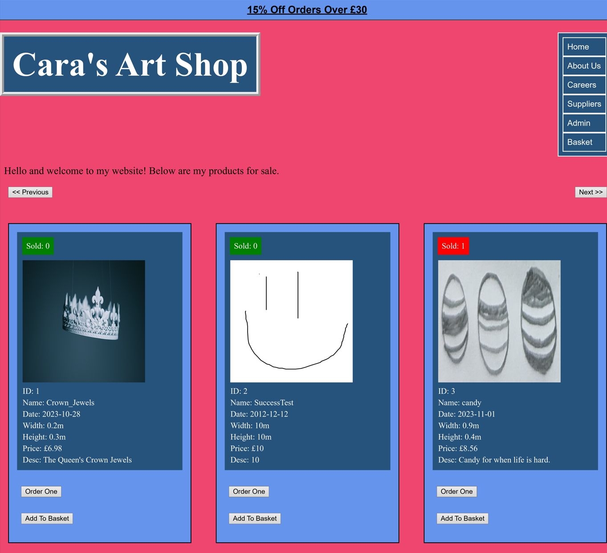
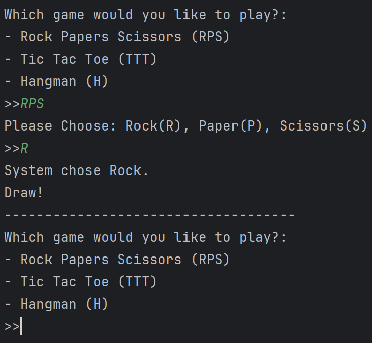

For my dissertation "Apps to managae multiple healthcare appointsments and documents", I started with research into a demographic and settled with chronic patients. This is due to the longevity and uncertainty of their illness such as which illness they may possess or what functions they retain. Next, I researched precedant, current technologies, issues with patients, the industry and technology. Combined with prototyping in Figma and the SDLC, I was able to refine the app as shown below with the following features.
During 3rd Year of University, my group was tasked with creating a mobile application for a target audience. The assignment demanded the use of Application Programming Interface calls, therefore, we chose tourists and frequent travelers. As the module was studying the use of Mobile Geographical data, this was a factor in our decision for our target demographic. The key features for navigation and planning when travelling are shown below.

Project: Create a client to client application using a server and sockets in Java. A list of extra marks will be awarded for each feature that is added and how well it is implemented.
The group decided on Swing as even though a Graphical User Interface was not required unless the video call feature was attempted, it could prove useful to show progress and act as a stepping stone for the aforementioned feature.

As an introduction to Web Applications Development, the project was to create an interactive E-commerce website that sells artwork. This assigment specified that customers can buy, view and remove from purchase artworks while an admin can carry out SQL CRUD operations on the artworks and this must be reflected to customers.

This project was designed to carry out the full SDLC by creating a Role Based GUI Application to view and change academic information. The users (Students, Lecturers, Managers) must all be able to correctly access and complete their tasks such as signing up for a class or approving a lecturer.
Create a terminal shell program with in-built commands.
By displaying interesting projects and showcasing myself, I am able to practice my technical skills and create a history for future developement.
Distinct colourful tabs that seperates multiple files inside a folder. These could be organised using aliases made by the user or grouped together under a unifying tag.
To experiment with ASCII & GUI art using simple games for engagement. This can be followed up with images or keyboard interaction.
